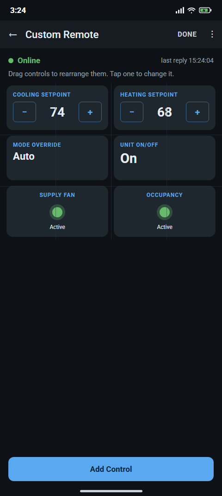
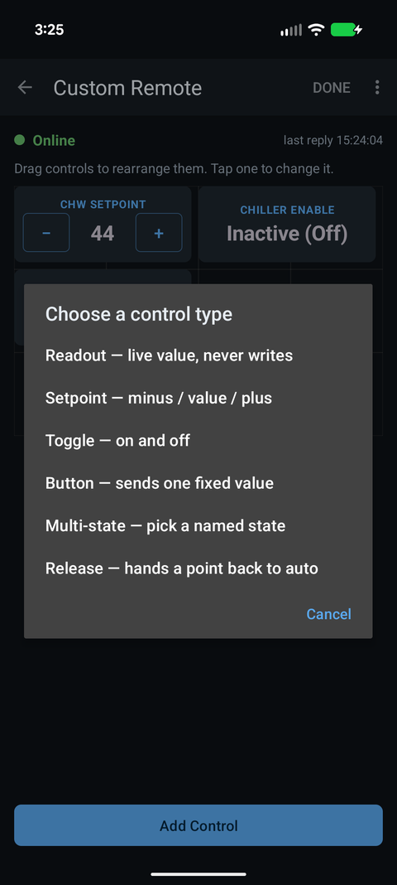
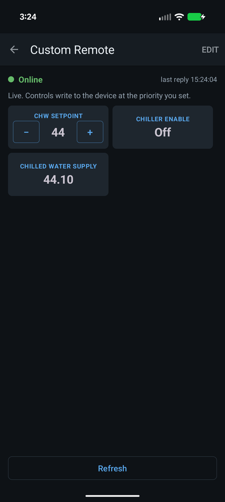

How do I build a custom BACnet control panel for several devices in Easy BACnet?
Updated 11 October 2026
The Control Panel Builder is a beta feature: it is only in the beta version of Easy BACnet, not the standard Play Store release. In the beta app, tap Control Panel Builder on the opening screen, then New panel (the + in the top bar, or Create a Panel). Pick the first device from your scan and name the panel; it opens in Edit mode. Tap Add Control to place a readout, setpoint, toggle, button, multi-state picker or release button, each bound to one point on one device. Add more devices from the menu's Devices… (up to 32 per panel), set the Grid width, drag controls into place, then tap Done to use it live. The free version keeps one panel driving one device; Easy BACnet Pro ($9.99 a year) allows unlimited panels with up to 32 devices each.



Beta feature. The Control Panel Builder is only in the beta version of
Easy BACnet; the standard Play Store release does not include it. It works end to end, but
check each control against the equipment the first time you use it. Panels are saved on your
phone and can be shared as .ebpanel files.
Remote or control panel?
A custom remote is one screen for one device. A control panel uses the same drag-and-drop designer, but each control can point at a different device, up to 32 on one panel. Build a remote for the rooftop unit you check every week; build a control panel for a heating plant where the plant controller, each boiler's controller and the pump controllers are separate BACnet devices and you want the enables, supply water temperature and setpoint on one screen. Devices behind a BACnet router (MS/TP) work too, as long as the scan found them.
Before you start
- Scan first. The builder picks devices from your last scan. If you have not scanned this session it says Scan for devices first, then build a panel from what you find and takes you to Easy BACnet Mode. Devices on another subnet can be added with Add device by IP… or a BBMD before you start, or typed in by hand later.
- Load the point lists of the devices you want to control (open each one from View Results) if you want to pick points by name. Otherwise you can enter any point by object type and instance number.
- Know which points are commandable. Readouts work on anything; setpoints, toggles, buttons and multi-state pickers need a point that accepts writes — see how to write to a BACnet point.
Step 1 — Create the panel
On the opening screen tap the Control Panel Builder card. The Control Panels screen lists your saved panels. Tap the + (New panel) in the top bar; with no panels yet, the screen offers Create a Panel (or Scan for Devices if you haven't scanned). Choose the first device in Start the panel with which device? — this becomes the panel's primary device, the one controls use unless you point them elsewhere. Give it a name in Name this panel (the device name is pre-filled) and tap OK. The panel opens in Edit mode with a four-column grid.
Step 2 — Add the other devices
In Edit mode open the menu (three dots) and tap Devices…. The dialog title shows how many devices the panel drives (Devices — 1 of 32); the list shows Primary: … first, then any extra devices with their IP addresses, and Add a device at the bottom. Add a device by either:
- Picking it from your scan — devices already on the panel are left out of the list; or
- Enter a device by hand — Name (optional), Device ID, and IP address (optional). Use this for a controller the scan cannot see. A device with no address cannot be reached until a scan finds it (the control shows This control's device isn't reachable).
A panel can drive up to 32 devices, including the primary; past that you see A control panel can drive up to 32 devices. Adding the same Device ID twice is refused. To remove an extra device, tap it in the list: Remove this device? warns how many of its controls will be disconnected; they command nothing until you use Change device to point them at another device. The primary device cannot be removed.
Step 3 — Add controls
Tap Add Control. When the panel has more than one device you first choose Add a control for which device?. Then pick the point:
- Pick from this device’s points — the list from your scan (open the device's point list once first if it says the list has not loaded).
- Enter a point by hand — Object type plus Object instance, for a point you know but did not enumerate.
Next, Choose a control type:
| Control | What it does | Typical point |
|---|---|---|
| Readout | Shows the live value. Never writes. | Supply water temp, boiler status, differential pressure. |
| Setpoint | Minus / value / plus; tap the value to type one. | Hot water supply setpoint, pump speed. |
| Toggle | Flips between an on and an off value. | Boiler enable, pump command. |
| Button | Sends one fixed value when pressed (with a confirmation). | An alarm reset. |
| Multi-state | Pick one of several named states. | Lead/lag selection, Occupied/Unoccupied. |
| Release | Hands the point back to automatic at the control's priority. | Put one next to every control that writes. |
The new control lands in the first free slot, labelled with the point name. (The status-light Indicator is only on single-device custom remotes; on a panel, use a Readout for an input.)
Step 4 — Set the grid width and arrange
Menu → Grid width sets the panel from 2 to 6 columns (new panels start at 4). Wider fits more small readouts per row; narrower gives bigger controls. Controls are refitted to the new width automatically. In Edit mode press and drag a control to move it; it snaps to the grid and will not land on another control. The hint at the top reminds you: Nothing is sent to any device while editing.
Step 5 — Configure each control
Tap a control to open its options: Rename control, Width, Write priority (1–16, default 8), Step size for a setpoint, Value to send for a button, State names for a multi-state (one per line, first line = state 1), Change device when the panel has several devices, Colour, Card style, Toggle large value text, or Delete control. Everything saves as you go; there is no Save button. The same Edit-mode menu has Rename panel and Delete panel (which cannot be undone).
Step 6 — Use it
Tap Done. The panel reads every control once and shows Online, Some points not answering or No response from device at the top; Refresh reads them again. Controls that write need Write mode turned on from the menu on the Easy BACnet Mode screen; until then the panel is read-only. A toggle won't act until it has read the point's current state, so it never writes based on a guess. Opening a saved panel later talks to each device at its last known address, so no scan is needed unless a device's IP has changed.
Sharing panels: export and import
- Export: on the Control Panels list,
long-press a panel. Android's save dialog opens with
Panel name.ebpanel; save it and send it like any file. - Import: menu → Import panel, then choose the
file. An imported panel is always added as a new panel; it never overwrites one you have.
A single-device remote file (
.ebremote) belongs in Custom Remotes instead.
Free vs Easy BACnet Pro
The free version keeps one control panel, driving its primary device only; trying to add a second device shows Multiple devices is a Pro feature, and a second panel shows One panel on the free version. Importing a multi-device panel on the free version keeps the layout and the primary device's controls; controls for the other devices are disconnected. Opening a saved panel on the free version asks to show one short ad, as a remote does; if no ad loads, the panel just opens. Easy BACnet Pro, the same $9.99-a-year subscription that removes ads and lifts the remotes limit, allows unlimited panels with up to 32 devices each. If the subscription ends, your panels are kept, but the free limits apply again.
Tips from the field
- Colour what acts. Make the control that stops a pump red and leave readouts plain, so the controls that change something are obvious at a glance.
- One Release per writer. Anything you can command you should be able to hand back. A release button next to each setpoint or toggle keeps a temporary override from becoming a permanent one — see BACnet priority and stuck overrides.
- Label by equipment, not by object. “B-2 Enable” beats “BO-3” when the panel spans six controllers that all have a BO-3.
- Duplicate Device IDs break panels. A panel follows each device by its ID (and remembers its IP). If two controllers share an ID, fix that first — see duplicate BACnet device IDs.
Check it on your own network. Easy BACnet is a free Android app that finds BACnet IP devices and reads their points in a couple of taps.
Get it on Google Play